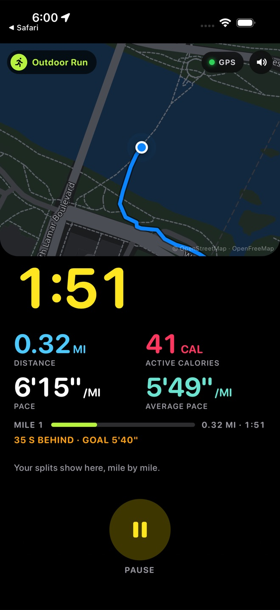

Your word at 5:13: no Apple Health; the goal is recording splits and showing the route nicely. That is built and shipped. Splits now stay on screen while you run, every mile has a pin on the map, and a finished run opens into a full-screen map where each split lights up its mile.
“No Apple Health sync wanted; the goal is recording splits and showing the run route nicely.” — your word, October 1, 5:13 PM
This clip is the real app in the iPhone simulator after a simulated run: the summary, a tap on split 1, the map full screen with that mile lit, then the whole route, then the last stretch.
Swipe sideways. These use a 5.6 mile run around Lady Bird Lake so the numbers are realistic.

Before, nothing was saved until you pressed END. If iOS restarted the app's page mid-run, or the app was swiped away, the run was gone.
Now the run in progress is saved every 15 seconds and at each split and pause. When the app comes back:
The picture is the simulator after the page was restarted twice mid-run, once while FOOTWORK was behind Safari. The clock, the distance and the route all survived, and it kept recording in the background.
This clip is the real app in the iPhone simulator, fed a simulated run around Lady Bird Lake. Nothing in it is a mock-up: the location comes through the phone's own location service, the map follows the dot, the route draws behind it.
Swipe sideways. The first shots are from the simulator; the ones with a 5.6 mile run use the same app fed a full recorded-style run so the numbers are realistic.
The banner drops in for six seconds with the mile's pace, your average pace and the time. The split's chip appears in the strip and its pin lands on the map. A chime plays, then the phone's own voice says the line. In the simulator the voice call was confirmed spoken to the end by the phone's speech engine (the simulator's volume stays at zero, so there is no sound in this clip).
The simulated runner here moves at about 5:30 per mile so the clip reaches a mile in under six minutes.
| Check | Result | What it covers |
|---|
Apple Health: no. Not built, off the list.
App Store: on hold. Nothing was submitted; the App Store still has 1.1.
Each question shows what was built as the first choice. Tap to change one. Your picks save on this page for the next session to read.